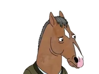
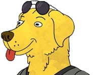

BoJack Horseman es una serie animada para adultos creada por Raphael Bob-Waksberg. Ambientada en un mundo donde humanos y animales antropomórficos conviven, sigue la vida de BoJack, un actor fracasado que lucha con sus inseguridades, adicciones y la búsqueda de un propósito. Aunque está llena de humor y sátira, también aborda temas profundos como la depresión, la fama y las relaciones humanas.
Personajes Principales

BoJack Horseman
Un caballo y actor en decadencia, cínico pero vulnerable.
Diane Nguyen
Escritora inteligente y crítica social, amiga cercana de BoJack.

Mr. Peanutbutter
Un perro actor optimista y alegre, opuesto a BoJack.